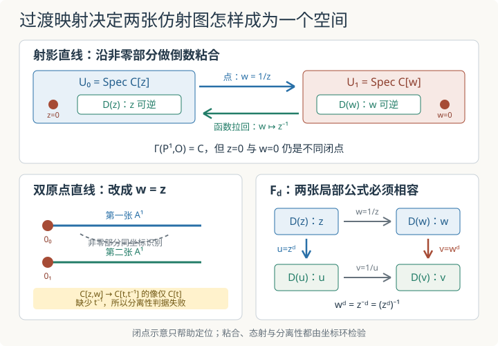

本页目录
基础衔接 13 · 仿射粘合：两张坐标图怎样成为一个概形
先修：局部化、层与粘合。射影直线上的 Čech 计算已经使用过同一覆盖，本讲补上它背后的概形构造与态射粘合。全篇固定底域为 \(\mathbb C\)，沿用 \(z=X_1/X_0\)；只建立两个仿射图的具体模型，不系统发展一般概形范畴、基变换或分离态射理论。
两张仿射直线为什么能粘成射影直线，而不是仍然只得到一张直线？
1. 先把两张图与重叠区域写成环
射影直线的两个标准仿射图是
以及
它们不是沿整张仿射直线粘合。第一张图中只有 \(z\) 可逆的地方进入重叠：
第二张图对应
在重叠处，两个坐标满足
因此 \(z=0\) 对应的闭点 \([1:0]\) 不在重叠中，\(w=0\) 对应的闭点 \([0:1]\) 也不在重叠中；它们都留在粘合后的空间里。其余非零复坐标按 \(a\leftrightarrow a^{-1}\) 配对。
这段闭点语言只是直观入口。\(\operatorname{Spec}\mathbb C[z]\) 的点是所有素理想，不仅有闭点 \((z-a)\)，还含有泛点 \((0)\)。在射影直线的图画里写下“复平面加无穷远点”，并没有列出概形的全部素谱点；后面的构造以环和局部化为准。
2. 为什么环映射箭头必须反过来
设
是在点坐标上执行 \(w=1/z\) 的同构。对应的坐标环同构却从目标函数拉回到源：
原因可以用“函数先去目标，再拉回源”记忆。若 \(g\) 是 \(D(w)\) 上的函数，拉回函数是
所以它必须定义在 \(D(z)\) 上。仿射概形的态射
与环同态 \(B\to A\) 对应，箭头相反。反向粘合映射由 \(z\mapsto w^{-1}\) 给出，两次复合都是恒等。
一般粘合需要在每对图的重叠上给同构，要求反向同构互为逆，并在三重重叠上满足 cocycle 条件。这里只用两张图，真正需要核对的核心就是两边重叠相同、映射互逆。标准粘合定理随后把拓扑空间与结构层一起粘成一个概形：
3. 全局正则函数只有常数，空间却绝不是一个点
一个全局正则函数由两张图上的多项式
组成，并要求它们在重叠上表示同一函数：
\(p(z)\) 只含非负次幂，\(q(1/z)\) 只含非正次幂。Laurent 单项式线性无关，所以两边只能共同保留零次项。于是
但 \(\mathbb P^1_{\mathbb C}\) 至少有上面两个不同闭点 \([1:0]\) 与 \([0:1]\)，而 \(\operatorname{Spec}\mathbb C\) 只有一个点。因此
若 \(X\) 是仿射概形，\(X\cong\operatorname{Spec}\Gamma(X,\mathcal O_X)\)；本例说明这个恢复公式不能无条件推广到所有概形。全局函数很少，不表示空间没有局部几何。

4. 只把倒数改成恒等，就得到双原点直线
再取两张仿射图
仍沿 \(D(z)\) 与 \(D(w)\) 粘合，但这次令点坐标满足
而不是 \(w=1/z\)。坐标环拉回为
所有非零点按相同坐标识别，两边的原点却都不属于重叠，因而保留成两个不同闭点 \(0_0,0_1\)。这就是双原点仿射直线 \(L\)。
它的全局正则函数是相容多项式对
局部化 \(\mathbb C[z]\to\mathbb C[z,z^{-1}]\) 是单射，所以这迫使两个多项式相同，得到
相应的典范态射 \(L\to\operatorname{Spec}\mathbb C[t]=\mathbb A^1\) 在两张图上都使用原坐标；它把 \(0_0,0_1\) 送到同一个普通原点，因而不是同构。由上一节的仿射恢复性质，\(L\) 不仿射，当然也不可能与 \(\mathbb A^1\) 同构。全局函数环相同并没有恢复出两个原点的差别。
这里还出现一个更精确的失败。对分离的 \(\mathbb C\)-概形，任意两个仿射开集 \(V_0,V_1\) 必须使自然环映射
满射。在双原点直线中，它具体是
其像只有 \(\mathbb C[t]\)，不含 \(t^{-1}\)，所以不满射。由标准仿射开集交判据，\(L\) 不是分离概形。这个环计算才是本讲采用的证明；“两个原点看起来分不开”的示意图不是证明。作为对照，\(\mathbb P^1\) 的同一映射把 \(z\) 送到 \(t\)、把 \(w\) 送到 \(t^{-1}\)，因而能生成整个 Laurent 环。
5. 局部公式怎样粘成一个射影态射
固定整数 \(d\ge1\)，考虑
两个齐次多项式次数相同，且不会同时在射影点上为零，所以公式良定义。为了不混淆源与目标，在目标的两张图上改用坐标
目标开集 \(\{Y_0\ne0\}\) 的原像正是源的 \(U_0\)，目标开集 \(\{Y_1\ne0\}\) 的原像正是源的 \(U_1\)。局部点坐标公式为
严格说，相应的仿射环映射仍从目标到源：
在源的重叠上 \(w=z^{-1}\)，所以第二张图给出
第一张图先给 \(u=z^d\)，再用目标重叠关系 \(v=u^{-1}\)，同样得到 \(v=z^{-d}\)。两份局部态射在整个重叠概形上相同，因而唯一粘成 \(F_d\)。
这个检查使用的是目标开集的原像。一般态射下，源开集的像未必是开集，更未必是方便的仿射图；不能反过来凭“局部公式的图像落在哪里”随意拼接。这里
恰好让两张标准图直接适用。
6. 相容必须作为概形态射成立
在复闭点上代几个数只能发现明显错误，不能证明两份局部态射相同。环同态相等会同时控制所有素谱点以及结构层拉回，才是完整的仿射检查。反过来，两个公式即使在少数闭点上碰巧给出同值，也可能在坐标环中不同。
因此两图粘合可以压缩成下面的证据链：
- 写出源图、目标图和真正的重叠开集。
- 把点坐标公式翻成反向的坐标环同态。
- 在局部化后的重叠环中验证两种复合严格相等。
- 由态射粘合的唯一性得到全局态射。
这还没有分类所有 \(\mathbb P^1\to\mathbb P^1\) 的态射，也没有讨论分歧、次数的函数域定义或除子。\(F_d\) 只是一份能逐项核查的标准样本。
下面复用 Čech 课的实验来核对第三节的全局函数。实验默认滑块是 \(k=-3\)，这里的 \(k\) 是线丛 \(\mathcal O(k)\) 的指标，不是底域。请务必把它调到 \(k=0\)：此时 \(\mathcal O(0)=\mathcal O\)，应看到 \(h^0=1,h^1=0\)。关闭脚本时，静态核对也很直接：\(\mathbb C[z]\) 提供非负指数，\(\mathbb C[z^{-1}]\) 提供非正指数，两边交集只剩指数 \(0\)。
7. 两道迁移题
题一。 仍以源坐标 \(z,w\) 和目标坐标 \(u,v\) 表示两张射影图。若有人在 \(U_0\) 写 \(u=z^2\)，在 \(U_1\) 写 \(v=w^3\)，这两份局部态射能否粘合？
把两边都换成目标坐标 v
不能。在重叠上，第一份公式与目标关系 \(v=u^{-1}\) 合起来给
第二份却给 \(v=w^3\)。\(w^2\) 与 \(w^3\) 在 \(\mathbb C[w,w^{-1}]\) 中不是同一个元素，所以两个环同态在整个重叠上不同。它们在 \(w=1\) 这个闭点上碰巧相等，也不足以粘合。
题二。 取常数 \(c\in\mathbb C^\times\)，把两张仿射直线沿非零部分按 \(w=c/z\) 粘合。所得概形是否仍与 \(\mathbb P^1\) 同构？它的全局正则函数是什么？
在第二张图重新缩放坐标
令 \(w'=w/c\)。因为 \(c\) 可逆，这给出第二张仿射图的坐标变换，而重叠关系变成
所以粘合数据经坐标重标后就是标准射影直线，所得概形与 \(\mathbb P^1\) 同构。全局函数条件是
左边只含非负 \(z\) 次幂，右边只含非正次幂；\(c\ne0\) 不改变指数，故仍只有常数：
速查与资料
| 操作 | 点或开集方向 | 坐标环方向 |
|---|---|---|
| 射影图粘合 | \(D(z)\to D(w)\)，\(w=1/z\) | \(\mathbb C[w,w^{-1}]\to\mathbb C[z,z^{-1}]\) |
| 双原点粘合 | \(D(z)\to D(w)\)，\(w=z\) | \(w\mapsto z\) |
| \(F_d\) 的零号图 | \(U_0\to\{Y_0\ne0\}\)，\(u=z^d\) | \(\mathbb C[u]\to\mathbb C[z]\) |
| 粘合态射 | 在源重叠上比较局部映射 | 在局部化环中比较拉回 |
概形粘合定理与两个标准例子见 Stacks Project：Glueing schemes、Projective line 和 Affine space with zero doubled。仿射态射与环同态反向对应见 The category of affine schemes；双原点直线使用的分离性判据见 Separation axioms。资料核查：2026-09-08。
继续计算：射影直线上的 Čech 上同调把相容函数对推广到 \(\mathcal O(k)\) 的局部截面，并测量一次粘合障碍。
继续计算：纤维与基变换通过平方映射的双点纤维，把环上的张量积、几何重数与底空间变化联系起来。